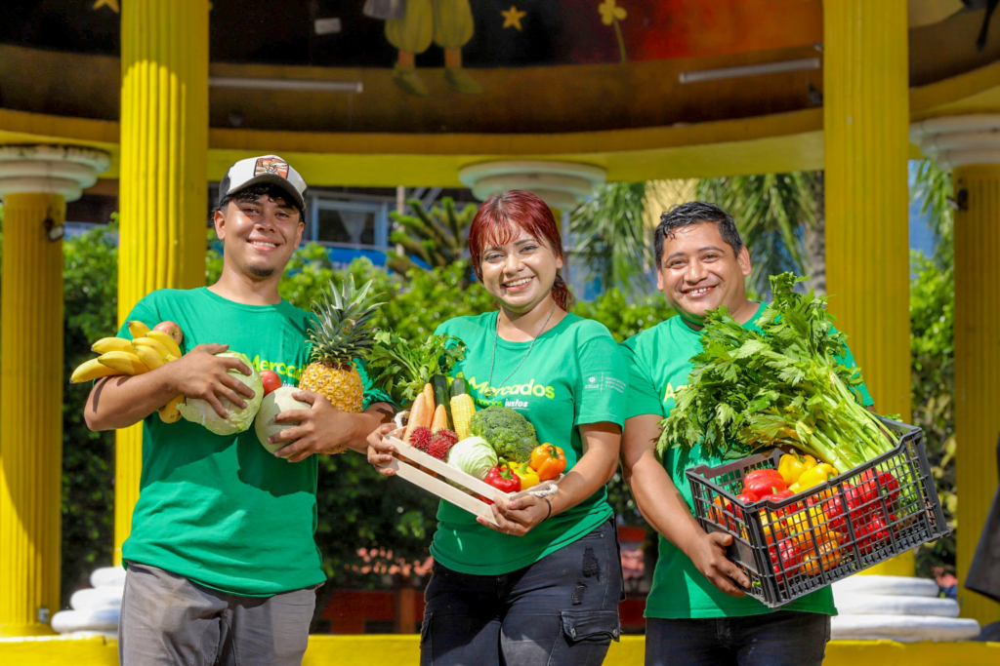

Del campo a tu mesa: conoce el viaje de nuestros productos
Cada producto que llega a tu hogar tiene una historia detrás. En HuertoHogar queremos acercarte a los productores locales y mostrarte el recorrido que realizan nuestros alimentos, desde el campo hasta tu mesa.
Todo comienza en el campo
Nuestro recorrido comienza junto a pequeños productores locales que trabajan diariamente para cultivar frutas, verduras y otros productos frescos. Su dedicación y conocimiento permiten obtener alimentos de calidad, respetando los ciclos naturales de la tierra.
Seleccionamos cada producto
Una vez cosechados, los productos son cuidadosamente seleccionados. Revisamos su calidad y frescura para que solamente los mejores productos formen parte de tu pedido.
Preparamos tu pedido
Después de la selección, comenzamos a preparar cada pedido. Organizamos los productos de manera cuidadosa para mantener su frescura y protegerlos durante el traslado.
Finalmente, llega a tu hogar
El último paso es la entrega. Nuestros productos realizan su último recorrido desde el centro de preparación hasta tu hogar, buscando que recibas alimentos frescos y en las mejores condiciones.
Más que productos, llevamos una historia
Cuando compras en HuertoHogar no solamente recibes frutas, verduras o productos naturales. También estás apoyando a productores locales y formando parte de una conexión más cercana entre el campo y las familias chilenas.